TAREA 2: El fantasma
En esta práctica vamos a ampliar los conocimientos aprendidos en las prácticas de inicio explicadas en clase y la práctica 1. Vamos a crear un videojuego en el que un fantasma va a realizar diferentes acciones dados eventos distintos. Antes de empezar, es necesario reseñar que el fantasma se mueve mediante la función DESLIZAR que da ese efecto de estar flotando, y que su disfraz por defecto es el ghost-a.
- EVENTO 1: Bandera. El fantasma inicializará su posición inicial a (x,y)=(-100,-50) y fijará su estilo de rotación a izquierda-derecha.
- EVENTO 2: Tecla c. El fantasma cambiará de color con la función SUMAR AL EFECTO y la cualidad COLOR.
| 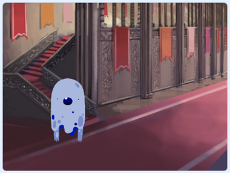 | 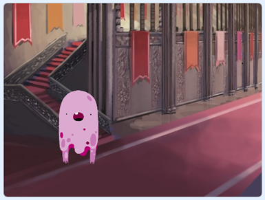 |
- EVENTO 3: Al hacer clic en el objeto. Al clicar sobre el fantasma, éste se elevará, dará un susto y volverá al punto de partida.
En este caso, para elevarse, donde tenemos que introducir la coordenada X introduciremos POSICIÓN DE X (para dejarla fija) y en la coordenada Y introduciremos un operador suma para subir (POSICIÓN DE Y + 100), de la misma forma utilizaremos el operador resta para volver a la posición inicial.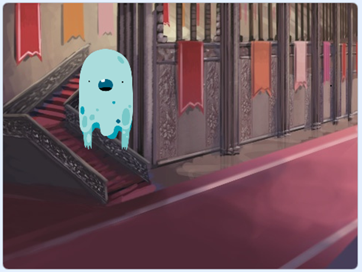
Con respecto al susto, se realizará de la siguiente forma: una vez que el fantasma ha ascendido, esperaremos 1 segundo para que el susto sea más real (utilizaremos la función ESPERAR X SEGUNDOS), y después comienza todo el proceso del susto. El fantasma modificará su disfraz a ghost-c, aumentará su tamaño con la función CAMBIAR TAMAÑO POR (con unos 50 será suficiente), dirá ¡Booo! por 1 segundo y finalmente volverá a su tamaño original y a su disfraz por defecto.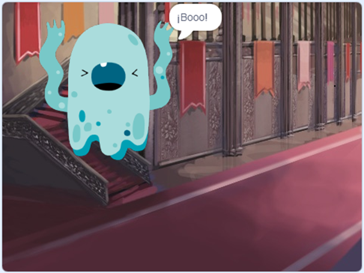
- EVENTO 4: Barra espaciadora. El fantasma se deslizará (función DESLIZAR) describiendo un triángulo y volviendo al punto de partida.
Cuando está deslizándose deberá utilizar el disfraz ghost-d. Recuerda que para que el disfraz se vea correctamente, el fantasma deberá mirar a la dirección correcta del deslizamiento (función APUNTAR EN DIRECCIÓN X).
Cada vez que llega a un vértice del triángulo, deberá volver a su disfraz por defecto y esperar 1 segundo.
| 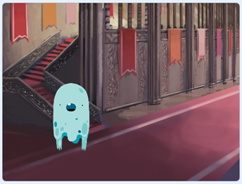 | 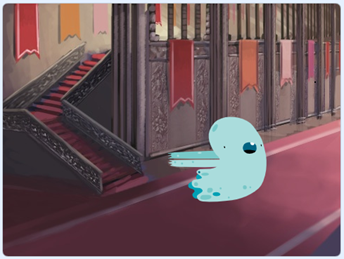 |
| 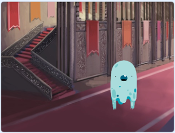 | 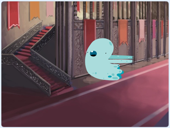 |
| 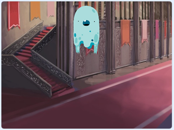 | 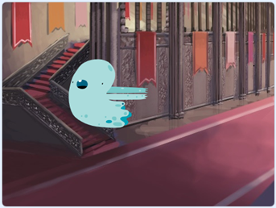 |
EVENTO 1: Bandera.
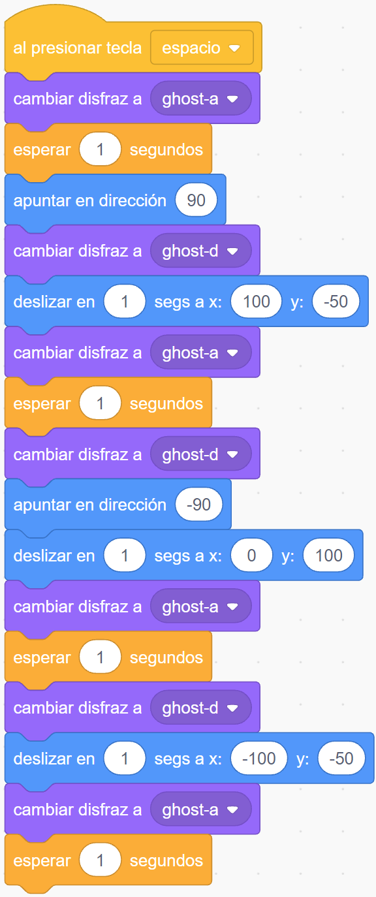
EVENTO 2: Tecla c.
EVENTO 3: Al hacer clic en el objeto.
EVENTO 4: Barra espaciadora.